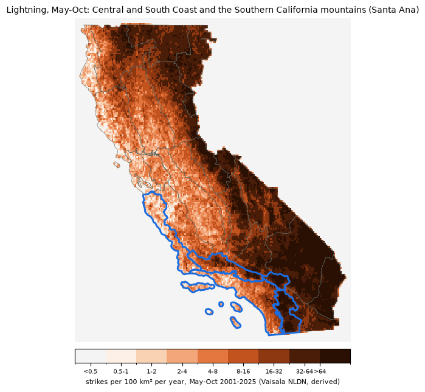

Thunderstorms and new lightning fires · Southern California, May–Oct · footprint: Central and South Coast and the Southern California mountains (Santa Ana) · today's run 2026-10-24 03:44 PT
The number of cloud-to-ground lightning strikes the lightning formula expects across the footprint on the fire day. The formula follows the shape of ECMWF's own lightning scheme (Lopez 2016): convective rain, cloud ice and water, instability (CAPE) and cloud-base height, multiplied together, with its exponents and scale fit to 25 years of observed strikes. It replaced the plain CAPE measure this row used before.
Lightning starts most of California's largest fires. In Northern California 235 of the 462 fires since 2001 that burned at least 1,000 acres were lightning-caused. Lightning fires come in clusters, often in remote country, and most are found on the day of the storm or the next. This row asks two things: will there be a lightning day, and how likely is a new large fire?
It was fit to observed strikes, Jun–Sep only (the formula's reanalysis history). On those days it ranks lightning days with an AUC of 0.95, against 0.91 for the CAPE setup it replaced. The row is still shown May–Oct: in May and October its cutoffs are carried over from summer, untested. Spring and fall storms are colder-based and lower-topped, so read those months with care. A full-year refit is planned.
SC07 Central Coast, SC08 South Coast, SC09 Western Mountains, SC10 Eastern Mountains, SC11 Southern Mountains

Lightning: Vaisala National Lightning Detection Network (NLDN), 2000–2025, used under license. Shown only as derived counts, rates and maps; no strike data are published or offered for download.
A lightning day here is a fire day with at least 100 strikes inside the footprint's PSAs. On a typical Jun–Sep day 10.7% of days are lightning days; per year that's about May 0.5, Jun 0.7, Jul 4.3, Aug 4.8, Sep 3.2, Oct 1.1 by month. Past the elevated cutoff, 34% are, and 15% have 500 strikes or more. History 2001-2025 (Jun–Sep), 3,025 days, 938 past the cutoff.
On the 938 days past the cutoff, a lightning fire that went on to burn at least 1,000 acres was found in the footprint that day or the next on 19 of them (2.0%, against 0.7% on a typical Jun–Sep day): about ×2.3 the usual odds for the date. That covers 86% of the 22 days a large lightning fire was found there.
| Days | Days with a new large lightning fire | × usual | |
|---|---|---|---|
| Formula past the cutoff and ERC ≥ 90th percentile | 106 | 1 | ×1.7 |
| Formula past the cutoff, ERC below 90th | 710 | 16 | ×3.1 |
| No setup, ERC ≥ 90th | 220 | 2 | ×1.1 |
| Neither | 1,505 | 1 | ×0.1 |
ERC is the footprint-average energy release component percentile from the toolkit's NFDRS reference data (2005–present). Each cell's odds are pulled toward its row's overall odds by 40 days' worth of history, so thin cells can't swing the forecast.
Dry versus wet lightning: on the 308 lightning days with under 0.1 inch of rain across the footprint (ERA5), a large lightning fire was found that day or the next on 4.9% of them; on the 16 wetter lightning days, 0.0%.
Days the most large (≥1,000-acre) lightning fires were found in the footprint, 2001–2025, with the strikes that day or the day before and what this measure showed.
Fires and causes from the satellite fires table (MTBS / WFIGS perimeters; cause and discovery from FPA FOD / InFORM). Strike counts are derived from Vaisala NLDN.
% of each ensemble's members past the elevated cutoff (≥ 8.8 strikes), by fire day. Only ECMWF IFS ENS carries the convective fields the formula needs (50 members, 14 fire days); the other models show no values. Past day 7 the outlook fades these boxes: thunderstorm forecasts that far out have little skill, and they haven't been verified.
| Model | 10/24 | 10/25 | 10/26 | 10/27 | 10/28 | 10/29 | 10/30 | 10/31 | 11/01 | 11/02 | 11/03 | 11/04 | 11/05 | 11/06 | 11/07 |
|---|---|---|---|---|---|---|---|---|---|---|---|---|---|---|---|
| All models | 0 | 0 | 0 | 0 | 0 | 18 | 56 | 70 | 66 | 30 | 30 | 40 | 22 | 12 | – |
| ECMWF IFS ENS (physics) | 0 | 0 | 0 | 0 | 0 | 18 | 56 | 70 | 66 | 30 | 30 | 40 | 22 | 12 | – |
| 10/24 | 10/25 | 10/26 | 10/27 | 10/28 | 10/29 | 10/30 | 10/31 | 11/01 | 11/02 | 11/03 | 11/04 | 11/05 | 11/06 | 11/07 | |
|---|---|---|---|---|---|---|---|---|---|---|---|---|---|---|---|
| Forecast ERC percentile (area mean, FEMS) | 19 | 24 | 30 | 36 | 39 | 36 | 36 | 36 | 36 | 36 | 36 | 36 | 36 | 36 | 36 |
| × usual odds of a new large lightning fire | ×0.1 | ×0.1 | ×0.1 | ×0.1 | ×0.1 | ×0.6 | ×1.8 | ×2.2 | ×2.1 | ×1.0 | ×1.0 | ×1.3 | ×0.8 | ×0.5 | – |
Odds combine this measure (each member past the cutoff or not) with the forecast fuels (ERC ≥ the 90th percentile = critically dry), using the history in "Weather + fuels" above. Faded: past the 7-day FEMS forecast, the last day's fuels carried forward.
The formula was fit on the ERA5 reanalysis, an older and coarser version of the IFS. Today's IFS makes sharper convective rain, which can push the expected strikes higher than the history behind the cutoffs. How to use it: Reading the calibrated outlook.
Lightning formula: after Lopez, P., 2016, Mon. Wea. Rev. 144, 3057–3075 (doi:10.1175/MWR-D-16-0026.1), on ECMWF IFS ENS open data (CC BY 4.0), calibrated with ERA5 (Copernicus Climate Change Service) to Vaisala NLDN strikes. Not ECMWF's lightning product.